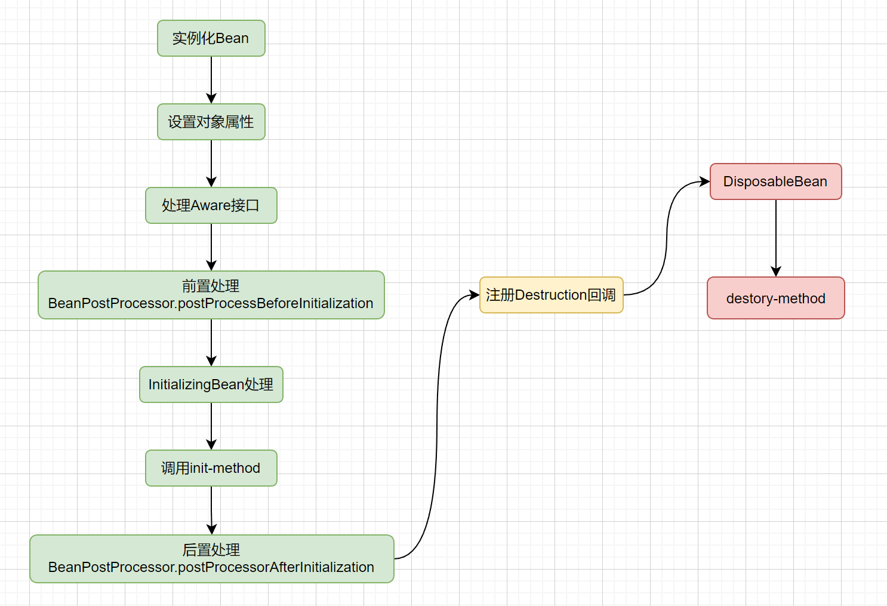
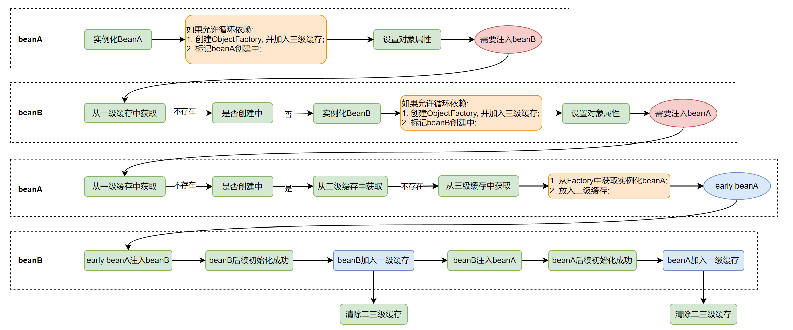

@Autowired@Resource和@InjectAutowired是先byType再byName, 如果不存在会报错; Resource是先byName再byType, 如果匹配不到会默认null
Autowired不仅可以注入单个对象, 还能注入List, Set, array, Map; 并且注入Map时, key就是beanName
Spring Bean生命周期按顺序如下:
AbstractAutowireCapableBeanFactory.registerDisposableBeanIfNecessary中对实现了DisposableBean的类或者自定义销毁方法的的bean进行回调注册.前1--8步在
AbstractAutowireCapableBeanFactory类中, 9--10步在DisposableBeanAdapter类中
示例代码如下(方法调用顺序与方法定义顺序一致):
package sch.frog.learn.spring.app;
import org.springframework.beans.BeansException;
import org.springframework.beans.factory.config.BeanPostProcessor;
import org.springframework.stereotype.Component;
@Component
public class GlobalLifeCycleDemoBean implements BeanPostProcessor {
@Override
public Object postProcessBeforeInitialization(Object bean, String beanName) throws BeansException {
System.out.println("postProcessBeforeInitialization : " + bean + ", beanName : " + beanName);
return bean;
}
@Override
public Object postProcessAfterInitialization(Object bean, String beanName) throws BeansException {
System.out.println("postProcessAfterInitialization : " + bean + ", beanName : " + beanName);
return bean;
}
}
//---------------分割线------------------
package sch.frog.learn.spring.app;
import org.springframework.beans.BeansException;
import org.springframework.beans.factory.*;
import org.springframework.context.ApplicationContext;
import org.springframework.context.ApplicationContextAware;
import org.springframework.stereotype.Component;
import javax.annotation.PostConstruct;
import javax.annotation.PreDestroy;
@Component
public class LifeCycleDemoBean implements BeanNameAware, BeanClassLoaderAware,
BeanFactoryAware, ApplicationContextAware,
InitializingBean, DisposableBean {
public LifeCycleDemoBean() {
System.out.println("contructor");
}
@Override
public void setBeanName(String s) {
System.out.println("set bean name : " + s);
}
@Override
public void setBeanClassLoader(ClassLoader classLoader) {
System.out.println("set bean class loader : " + classLoader.toString());
}
@Override
public void setBeanFactory(BeanFactory beanFactory) throws BeansException {
System.out.println("set bean factory : " + beanFactory);
}
@Override
public void setApplicationContext(ApplicationContext applicationContext) throws BeansException {
System.out.println("set applicatoin context : " + applicationContext.getApplicationName());
}
// 执行全局的 BeanPostProcessor.postProcessBeforeInitialization
@PostConstruct
public void postConstructor(){
System.out.println("PostConstruct");
}
@Override
public void afterPropertiesSet() throws Exception {
System.out.println("afterPropertiesSet");
}
// 执行全局的 BeanPostProcessor.postProcessAfterInitialization
@PreDestroy
public void preDestory(){
System.out.println("PreDestroy");
}
@Override
public void destroy() throws Exception {
System.out.println("destroy");
}
}
两个或者多个bean之间互相依赖, 形成循环引用的情况. 如果不加以处理, 会导致应用程序启动失败. Spring引入三级缓存用以解决循环依赖.
限制: 1. 互相依赖的Bean必须是单例的; 2. 依赖注入的方式不能是构造函数注入(构造器循环依赖用@Lazy可以解决);
bean的创建起始于
org.springframework.beans.factory.support.AbstractAutowireCapableBeanFactory#createBean(java.lang.Class<T>)方法, 可以从这个方法一点点看到它的逻辑
bean创建的流程, 上面bean生命周期中已经有了. 结合循环依赖下的三级缓存的流程如下:

总结就是: beanA创建阶段将自己的ObjectFactory放入三级缓存, 然后发现需要注入beanB, 触发创建beanB, 这时有需要注入beanA, 从三级缓存中取到beanA的factory, 创建beanA, 使得beanB创建成功, 继而beanA也创建成功;
解决循环依赖一定需要三级缓存吗?
答: 从上图也能看出, 只需要二级缓存也可以, 之所以使用三级缓存, 是为了考虑AOP代理对象. 正常情况下, AOP代理对象是在BeanPostProcessor.postProcessAfterInitialization阶段转换的, 如果只使用二级缓存, 就是上图中"加入三级缓存"改成"加入二级缓存", 那么就需要保证二级缓存中必须是AOP代理对象, 也就需要把所有的代理对象都提前创建出来, 这就打破了上面的BeanPostProcessor设计. 如果采用三级缓存, 只需从factory中获取对象时才需要稍微破坏一下, 其余依旧保持原样.
@Lazy是如何解决循环依赖的?
答: 有Lazy注解注入的地方, 会先注入一个临时的代理对象, 在真正使用的时候, 会返回实际的对象.
SpringBoot2.6及以后的版本呢默认不支持循环依赖, 需要手动加上配置
spring.main.allow-circular-references=true.
applicationContext.getBean(name);Spring容器中的bean可以分为5个范围:
注意, @Order只能控制同一类型bean在集合中的顺序, 不能控制不同类型bean的初始化顺序
@Target(ElementType.METHOD)
@Retention(RetentionPolicy.RUNTIME)
public @interface OpLog{}
@Aspect
@Component
public class OpLogAspect{ // 这整个类就是一个切面
private static final Logger logger = LoggerFactory.getLogger(OpLogAspect.class);
@Autowired
private HttpServletRequest request;
@Around("@annotation(xxx.xxx.xxx.annotation.OpLog)") // 这个就是PointCut, 类似的注解还有: Pointcut, Before, After等
public Object log(ProceedingJoinPoint pjp/*这个就是joinPoint连接点*/) throws Exception{
/*
* 这个方法里面的内容就是Advice
*/
Method method = ((MethodSignature)pjp.getSignature()).getMethod();
OpLog opLog = method.getAnnotation(OpLog.class);
Object response = null;
try{
response = pjp.proceed();
}catch(Throwable t){
throw new Exception(t);
}
logger.info("log");
return response;
}
// 织入工作由Spring完成, 将切面与业务逻辑连接起来
}
AOP通知类型
Spring事务种类
声明式事务的优点: 使用@Transactional注解, 侵入低, 不污染代码
声明式事务的缺点: 粒度只能到方法级别, 无法做到代码块级别
声明式事务演示:
@Transactional(propagation = Propagation.REQUIRED, isolation = Isolation.DEFAULT, timeout = 30 /*秒*/, readOnly = false, rollbackFor = Exception.class)
rollbackFor指定哪些异常会触发事务回滚, 如果不指定, 默认是RuntimeException和Error会触发事务回滚
propagation用于控制多个事务方法相互调用时的事务行为, 默认是Propagation.REQUIRED
传播行为
隔离级别
@Transactional事务失效
如果@Transactional和@Async注解加在同一个方法上, 那么事务不会失效, 但是如果@Transactional注解的方法调用了@Async的方法, @Async的方法不会触发@Transactional方法事务的回滚
Spring MVC是指Model-View-Controller, 即: 模型-视图-控制器.
HandlerMapping的抽象实现AbstractHandlerMapping中有如何通过url寻找Handler的代码, 可以理解为一个map, key是url, value是handler.
假如有这样一种场景: 需要对一个jar包进行热插拔, 当jar包加载进去之后, 就需要动态的加载RequestMapping, 如果jar包移除就需要动态的移除RequestMapping. 可以这样做:
动态添加RequestMapping:
RequestMappingHandlerMapping requestMappingHandlerMapping = SpringUtil.getBean(RequestMappingHandlerMapping.class);
Object object = applicationContext.getBean(beanName); // 需要注册的controller
if(object != null && requestMappingHandlerMapping != null){
Method method = requestMappingHandlerMapping.getClass().getSuperclass().getSuperclass().getSuperclass().getDeclaredMethod("detectHandlerMethods", Object.class);
method.setAccessible(true);
method.invoke(requestMappingHandlerMapping, object);
}
移除RequestMapping:
RequestMappingHandlerMapping requestMappingHandlerMapping = SpringUtil.getBean(RequestMappingHandlerMapping.class);
Object object = applicationContext.getBean(beanName); // 需要注册的controller
requestMappingHandlerMapping.getHandlerMethods().forEach((mappingInfo, handlerMethod) -> {
if(handlerMethod.getBean().equals(object)){
requestMappingHandlerMapping.unregisterMapping(mappingInfo);
}
});
@RestControllerAdvice
public class GlobalExceptionHandler {
private static final Logger logger = LoggerFactory.getLogger(GlobalExceptionHandler.class);
@ExceptionHandler(ShiroException.class)
@ResponseBody
public Object handleNoAuthException(HttpServletRequest request, HttpServletResponse response, Exception e) {
String requestId = RequestUtil.getRequestId();
logger.error("no auth when processing the request[{}] form action[{}]", requestId, request.getRequestURI(), e);
return EchoErrorBuilder.builder().code(EchoError.AUTH_FAILURE).message("no auth").requestId(requestId).build();
}
@ExceptionHandler(Exception.class)
@ResponseBody
public Object handOtherException(HttpServletRequest request, HttpServletRequest response, Exception e){
String requestId = RequestUtil.getRequestId();
logger.error("internal exception when processing the request[{}] form action[{}]", requestId, request.getRequestURI(), e);
return EchoErrorBuilder.builder().code(EchoError.INTERNAL_ERROR).message("internal exception").requestId(requestId).build();
}
}
主要是两个注解:
在传统的SSM架构中, 是存在父子容器的, 即controller层通常是子容器, service和dao是父容器, 子容器可以访问父容器, 但是父容器不能访问子容器. 现在的项目一般都是SpringBoot, 这时不论controller, service, dao都是在同一个容器中, 不存在父子容器了.
SpringBoot的主要用途是实现了自动装配和自动配置. 简化了应用程序的配置和Bean的管理.
通过Configuration, Compont等注解可以进行自动配置, bean注入等, 但是这个前提是, spring只会扫描启动类下面的包里的这些注解, 对于依赖的第三方jar中的Spring配置需要如何让Spring扫描到呢. 这时需要在META-INF/spring/org.springframework.boot.autoconfigure.AutoConfiguration.imports文件中添加类似配置:sch.frog.custom.config.FrogCustomConfiguration. Spring在启动时自动扫描classpath目录下的所有这个文件, 然后就可以加载第三方的配置了.
旧版Spring中, 这个配置放在
META-INF/spring.factories中, 配置形式类似:org.springframework.boot.autoconfigure.EnableAutoConfiguration=sch.frog.custom.config.FrogCustomConfiguration
条件化配置
条件化配置注解有: Conditional, ConditionalOnClass, ConditionalOnMissingBean, ConditionalOnProperty等;
如下是Spring Boot启动的入口:
@SpringBootApplication
public class SparrowApplication {
public static void main(String[] args){
SpringApplication.run(SparrowApplication.class, args);
}
}
调用流程如下:
BootstrapRegistryInitializer;ApplicationContextlnitializer;ApplicationListener;ApplicationStartingEvent事件;ApplicationContext;ApplicationContext, 包括加载Bean定义等;ApplicationContext, 完成Bean的创建和初始化, 以及web容器启动(详见下面)等;ApplicationStartedEvent事件;CommandLineRunner或ApplicationRunner接口的Bean.web容器的启动
main方法中调用SpringApplication.run --> refreshContext --> refresh --> onRefresh, 最终ServletWebServerApplicationContext.onRefresh中会调用createWebServer方法. 从而调用了内置的web容器(默认是tomcat).
如果不用tomcat, 改成别的, 直接将他的starter依赖引入即可, 不需要任何配置.
生成进程id
如下代码会在spring boot启动后, 生成一个app.pid文件.
@SpringBootApplication
public class SparrowApplication {
public static void main(String[] args){
SpringApplication application = new SpringApplication(SparrowApplication.class);
application.addListeners(new ApplicationPidFileWriter("app.pid"));
application.run(args);
}
}
之后, 在停机时, 执行: cat app.pid | xargs kill;
延迟停机
在application.properties配置文件中配置server.shutdown=graceful(默认值: immediate), 当服务停止时, 不再接受新的请求. 并且服务器也不会立即关闭, 而是等待正在进行的请求处理完成, 其中, 这里的等待时间可以通过spring.lifecycle.timeout-per-shutdown-phase=2m设置为2分钟(默认是30s)
Actuator
pom文件增加依赖:
<dependency>
<groupId>org.springframework.boot</groupId>
<artifactId>spring-boot-starter-actuator</artifactId>
</dependency>
增加配置项:
management.endpoint.web.exposure.include=*
management.endpoint.shutdown.enabled=true
然后就可以通过curl -X POST http://localhost:8090/actuator/shutdown, 实现关机.
Shutdown Hook
DisposableBean实现类的destroy方法;PreDestroy注解的方法Runtime.getRuntime().addShutdownHook(new Thread(...))注册的shutdown hook@Component
public class TestListener implements ApplicationListener<ContextClosedEvent> {
@Override
public void onApplicationEvent(ContextClosedEvent event) {
// do something
}
}
starter可以作为特定功能或者组件的配置单元, 简化配置过程, 让项目轻松的重用这些功能.
<dependency>
<groupId>org.springframework.boot</groupId>
<artifactId>spring-boot-starter</artifactId>
</dependency>
META-INF/spring/org.springframework.boot.autoconfigure.AutoConfiguration.imports, 并配置(详见上面的自动配置)环境变量中添加: SPRING_PROFILES_ACTIVE=prod或者JVM参数增加-Dspring.profiles.active=prod;
后加载的文件中的配置覆盖先加载的, 所以后加载的配置优先级高;
同类文件加载顺序: .yaml>.yml>.properties
如果是自定义文件名, 可以在项目启动时通过:
spring.config.name配置文件名, 通过spring.config.location配置文件路径;
@Component, @Service, @Repository, @Controller这几个注解都是用来声明bean的, 功能上几乎没有差异, 但是语义上存在区别;@Bean: 也是用来声明bean的, 用在方法上, 将方法的返回值放入Spring的bean容器;@Configuration: 标记一个类为配置类, 配合@Bean注解来管理bean的创建等;(Configuration修饰的类也会放入spring容器中)@Configurable: 这个注解不常用, 用来向普通的非Spring对象中注入Bean, 具体用法有点复杂也不常用, 这里不做介绍.@RestController@RequestMapping, @PostMapping, @GetMapping, @PutMapping, @DeleteMapping@Value: 设置配置值的, 示例:@Value("${spring.application.name}")或者@Value("${spring.application.name:xxx}")@Import: 类注解, 用来指定将某一个或多个类的实例对象注入到spring容器中@PropertySource: 用来加载配置, 示例如下:fff.properties文件:
aaa=123
代码:
@Configuration
@PropertySource(value = "classpath:fff.properties")
public class FFFConfiguration {
@Value("${aaa}")
private String aaa;
}